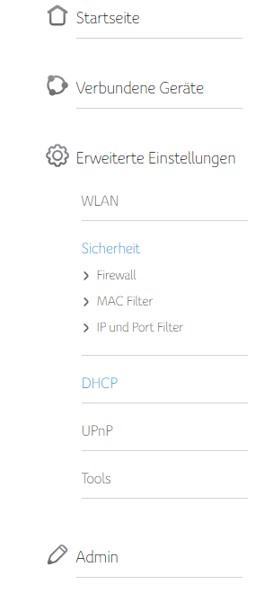

Hallo Community!
Habe heute endlich eine Glasfaser Leitung bekommen nachdem ich mit meinem alten Funktarif nicht zufrieden war.
Beim alten Router (ZTE Huawei) musste man dort "business.gprs.internet" aktivieren um Ports aufzumachen.
Wie funktioniert das bei der Fiber Box?
Das Einstellungsmenü ist nunja, sehr minimalistisch gehalten und ich konnte unter keinem einzigen Unterpunkt weder "DMZ" noch was änliches finden...
Ich muss verschiedene Ports aufmachen da ich einen 2. PC besitze und dort gerne Server hoste. Am einfachsten wäre es einfach den 2. PC in eine "DMZ" hinzuzufügen aber diese Option gibt es bei mir nicht...
Anbei ein Foto von den verfügbaren Einstellungen.
Vielen Dank im Vorraus,
Und LG Elias.

Hey
@Lost_Key
Portweiterleitungen können bei der Fiber Box erst eingestellt werden, nachdem der Anschluss von IPv6 auf IPv4 umgestellt wurde. Diese Umstellung muss über den Kundenservice in Auftrag gegeben werden und die Bearbaiting kann mehrere Tage dauern.
LG NTM